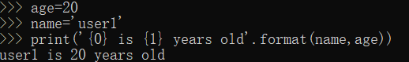

python 版本简介
新的python程序建议使用
python 3.0版本的语法
python 3.x是现在和未来的主流版本
为了不带如过多累赘，python 3.0在设计时没有考虑向下兼容
- 为了照顾现有旧版本程序，官方提供了过滤版本–
python 2.6>,基本使用python 2.0的语法和库，允许使用部分3.0的语法与函数;python 2.7是python 2.x的最后一个版本
python快速入门
程序输出，print语句
1 | >>>myString = 'hello word'; |
下划线( _ )表示最后一个表达式的值1
2>>>_
hello word
python的print语句可与字符串操作符（%）结合使用，类似于C语言中printf()函数占位符1
2>>> print "%s is num %d!" % ("python",1)
python is num 1
%s – 字符串
%d – 整行
%f – 浮点型
> – 重定向
下面是将输出重定向到错误日志中的demo1
2
3logfile = open('/tmp/mylog.txt','a')
print >> logfile,'Fatal error: invaalid input'
logfile.colse()
程序输入和raw_input()内建函数
1 | >>> user = raw_input("inter login name:") |
上面是输入字符串，只能用于文本输入。下面输入一个数值字符串，并将字符串转换为数值）1
2
3
4>>> num = raw_input('enter a num:')
enter a num:126
>>> print int(num)*2
24
可与下面的输出进行比较1
2
3
4>>> num = raw_input('enter a num:')
enter a num:12.1
>>> print num*2
12.112.1
小知识
help()函数可以帮助使用生疏函数，将函数名作为help()函数的参数值，可以得到相应的帮助信息1
2
3
4
5
6
7
8
9
10>>> help(raw_input)
Help on built-in function raw_input in module __builtin__:
raw_input(...)
raw_input([prompt]) -> string
Read a string from standard input. The trailing newline is stripped.
If the user hits EOF (Unix: Ctl-D, Windows: Ctl-Z+Return), raise EOFError.
On Unix, GNU readline is used if enabled. The prompt string, if given,
is printed without a trailing newline before reading.
操作符
1. 算术操作符
+ 、 - 、 * 、 /(地板除) 、 //(浮点除法，对结果进行四舍五入) 、 % 、 ** (幂)
2. 比较操作符
> 、 < 、 = 、 >= 、 <= 、 == 、 != 、 <> 、 >> 、 <<
结果返回布尔值
3. 逻辑运算符
and 、 or 、 not
3<4<5 等价于 3<4 and 4<5
4. 位运算符
1 | 设变量a=60，b=13，二进制格式如下： |

5. 成员运算符
除了以上的一些运算符之外，Python还支持成员运算符，测试实例中包含了一系列的成员，包括字符串，列表或元组。
| 运算符 | 描述 |
|---|---|
| in | 如果在指定的序列中找到值返回 True，否则返回 False |
| not in | 如果在指定的序列中没有找到值返回 True，否则返回 False。 |
6. 身份运算符
身份运算符用于比较两个对象的存储单元
| 运算符 | 描述 |
|---|---|
| is | is 是判断两个标识符是不是引用自一个对象 |
| not is | is not 是判断两个标识符是不是引用自不同对象 |
注：is用于判断两个变量引用对象是否为同一个，==用于判断引用变量的值是否相等
变量和赋值
python中的变量名仅仅是一些字母开头得标识符——所谓字母开头，意指大写或小写字母、包括下划线_ ；其他的字符可以是数字、字母或下划线。python变量是大小写敏感的。
python是动态类型语言，不需预先声明变量类型
数
python有3中数据类型：整数、浮点数、复数（-5+3i）
注：python中不区分long int类型，默认的整数类型可以任意长。
字符串
同其他语言一样，是字符的序列
1. 单引号、双引号、三引号
单引号与双引号指定字符串，所有的空白，即空格和制表 符都照原样保留。
三引号(''') 可以指定一个多行的字符串，可以在三引号中自由 的使用单引号和双引号。
1
2
3
4
5
6
7
>>> print('''aaa
... bbb
... '''
... )
aaa
bbb
ccc
2. 转义序列
使用反斜杠(\\)将特殊字符进行转义
比如单引号里用单引号，双引号里用双引号，都需要将内容里的单引号进行转义
如果想指定两行字符串的话，一是用''',二是用转义符\n表示新的一行的开始<span id="inline-blue">(This is the first line\nThis is the second line )</span>
> 在一个字符串中，在一行末尾的反斜杠仅仅表示下一行的字符串是上一行的继续，但并不增加新的行。
1
2
3
>>> "one.\
... two"
'one.two'
3. 自然字符串
如果，你想指定一些不被特殊处理，例如像转义序列，那么，就需要通过在字符 串前面附加 r 或 R 来指定自然字符串。
例如，`r'Newlines are indicated by \n'`
4. 按字面意义级连字符串
如果把两个字符串按字面意思连接相邻写入，它们会被python 自动级连。
例如， "What\’s"'your name?'
5. 字符串拼接
可以使用`str1.__add__(str2)`或者`str1 + str2`或者直接两个字符串放一起,来拼接字符串
但字符串与其它类型拼接时，得先把其它类型转成字符串类型，否则会出错。如'str1 + 2'就会出错，需要'str1 + str(2)'
6. 字符串的乘法运算
"\*": 可以把字符串重复拼接若干次,如: 2 \* 3 得到 6; 'la' \* 3得到'lalala'。但乘以0或者负数时,结果将会是空字符串""
7. 字符串序列（索引和切片）
字符串可以使用下表来获取字符串中某个项目，以及截取字符串
用法如： a='qweasd' 则a[1]=>'w' ; a[1:3]=>'we' ; a[1:-1]=>'weas'
8. str(anything)函数和 unicode(anything)函数
Python 2有两个全局函数可以把对象强制转换成字符串:unicode()把对象转换成Unicode字符串，还有 str()把对象转换为非Unicode字符串。
Python 3只有一种字符串类型，Unicode字符串，所以 str()函数即可完成所有的功能。(unicode()函数在Python 3里不再存在了。)
注：
- 没有专门的char数据类型，确实没有需要有这个类型。
- 单引号和双引号字符串是完全相同的——它们没有在任何方面有不同。
- 正则表达式: 一定要用自然字符串处理正则表达式。否则会需要使用很多的反斜杠。
- 使用 help(str) 可查看字符串对象定义的所有方法及属性。
- 由于百分号有特殊作用，所以字符串里面要用百分号的话需要使用“%%”，如: “select * from my_table where name like ‘%%测试%%’”
字符串详细内容参见大佬博客链接：
https://blog.csdn.net/qq_33337811/article/details/78312998
format方法
类似于占位，在不想用其他信息来构造字符串时，使用format()方法很有用。
转为字符串的操作由 format 自动完成，而不需要明确 的转换。用 format 方法的时候，不必处理用过的变量和 vice-versa 就能改变消息。
对象
Python 是完全面向对象的，在某种意义上，任何东西都被作为对象，包括数字、字符串和函数。
demo: 使用变量和文字意义上的常量1
2
3
4
5
6
7
8
9
10
11
12
13
14
15
16
17# filename:demo1.py
i=5
print(i)
i = i+1
print(i)
s='''This is one.
this is two'''
print(s)
输出：
5
6
This is one.
this is two
注：使用变量时只需要给它们赋一个值。不需要声明或定义数据类型。
逻辑行和物理行
物理行是编写程序时所看见的。逻辑行是python看见的单个语句。python嘉定每个物理行对应一个逻辑行。
如果像在一个物理行中使用多于一个逻辑行，那么使用分毫开特别地标明这种用法。分号表示一个逻辑行语句的结束。
1 | 1 i = 5 |
控制流
在python中有三种控制流：if、 for、 while
if
注意 if 语句在结尾处包含一个冒号 —— 我们通过它告诉 Python 下面跟着一个语 句块。
在 Python 中没有 switch 语句。你可以使用if..elif..else语句来完成同样的工作（在某些场合，使用 字典会更加快捷。）
demo:1
2
3
4
5
6
7
8
9
10
11#filename:if.py
number = 24
guess = int(raw_input('enter an integer:'))
if (guess == number):
print('win')
elif (guess <= number):
print("s");
else:
print("b");
while
while 语句有一个可选的 else 从句
demo:1
2
3
4
5
6
7
8
9
10
11
12
13
14
15
16
17# Filename while.py
number = 23
running = True
while running:
guess = int(raw_input("enter a number"))
if guess == number:
print("win")
running=False
elif guess <number:
print("s")
else:
print("b")
else:
print("the while loop is over")
print("over")
结果：1
2
3
4
5
6enter a number24
b
enter a number23
win
the while loop is over
over
for
for...in是另外一个循环语句，它在一序列的对象上迭代，即逐一使用序列中的每个项目
else 部分是可选的。如果包含 else ，它总是在 for 循环结束后执行一次， 除非遇到 break 语句。在 C/C++ 中，如果你想要写 for (int i = 0; i < 5; i++) ，那么用 Python ，你写成 for i in range(0,5) 。你会注意到， Python 的 for 循环更加简单、明白、不易出错.
demo:1
2
3
4for j in range(1,5):
print(j)
else:
print('the for loop is over')
结果：1
2
3
4
51
2
3
4
the for loop is over
break
break 语句是用来终止循环语句的，即哪怕循环条件没有变为 False 或序列还没有 被完全迭代结束，也停止执行循环语句。
如果你从 for 或 while 循环中终止，任何对应的循环 else 块 将不执行。
demo:1
2
3
4
5
6
7#Filename:break.py
while True:
s = (raw_input('enter something:'))
if s=='quit':
break
print('length os the string is',len(s))
print('Done')
结果：1
2
3
4enter something:quite
('length os the string is', 5)
enter something:quit
Done
continue
continue 语句对于 for 循环也有效。
1 | #Filename:continue.py |
结果：1
2
3
4Enter something:asd
small
Enter something:asdsdas
Enter something:quit